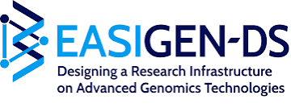

 |
|
Genomics Core Leuven & EASIGEN-DS Invite You To
Multi-Omics Data Integration Symposium
Fundamental Concepts & Applications
|
| Date: Oct 2, 2026 | Location: ON5 04.112, Campus Gasthuisberg, Leuven | Format: In-Person (Hybrid) |
|
About the Symposium
Modern biomedical research generates massive, high-dimensional datasets across genomics, transcriptomics, proteomics, and epigenomics. The true challenge lies in integrating these computational, semantic, and statistical layers to provide a comprehensive, systems-level view of biology. By leveraging breakthrough advances in artificial intelligence and statistical modeling, researchers are driving critical progress in our understanding of complex diseases and diverse biological processes.
This symposium explores the latest frameworks and experimental strategies to harmonize diverse omics data, enabling deeper insights into disease mechanisms and biological processes.
|
|
Who Should Attend & Key Takeaways
Who should attend? Designed for students, researchers, and anyone eager to gain state-of-the-art knowledge in integrating omics data.
|
Featured Keynotes & Pitch
Student Opportunity:
Students attending the symposium will have the unique chance to present their own research during an exciting 3-minute pitch session! |
| Time | Topic | Speaker |
|---|---|---|
| 08:30 – 09:00 | Registration | — |
| 09:00 – 09:10 | Welcome | Wouter Boussuyt (Genomics Core Leuven) |
| 09:10 – 10:00 | Keynote 1: Title TBA | Alejandro Sifrim (KU Leuven) |
| 10:00 – 11:00 | The Multi-Omics Landscape: Current Status | Wouter Boussuyt (Genomics Core Leuven) |
| 11:00 – 11:30 | Coffee Break | — |
| 11:30 – 12:00 | Multi-Omics Data Types & Bioinformatics | Álvaro Cortés Calabuig (Genomics Core Leuven) |
| 12:00 – 12:30 | Pitch Your Research (3-Min Student Pitches) | Symposium Attendees |
| 12:30 – 13:30 | Lunch Break | — |
| 13:30 – 14:30 | Keynote 2: Title TBA | Bernard Thienpont (KU Leuven) |
| 14:30 – 15:00 | Protein Sequencing: Title TBA | Anna-Teresa D'Hooghe (KU Leuven) |
| 15:00 – 15:30 | Mysteries of Neurogenesis in Octopus Vulgaris | Mark Lassnig (KU Leuven) |
| 15:30 – 15:45 | Pitch Awards & Ask the Team | Genomics Core Team |
|
Registration Info: Deadline: Sept 25, 2026 • Cost: €25 (Advance payment required) • Complimentary lunch & coffee included • Questions? info@genomicscore.be |
Register Here |